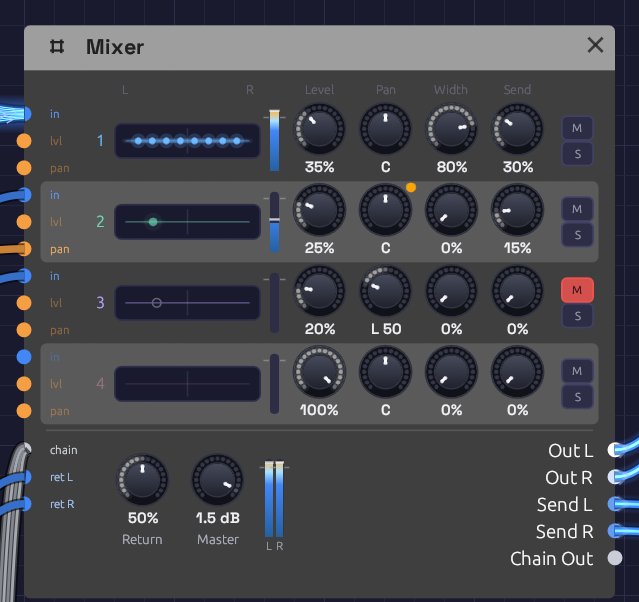

Mixer
Module ID util.mixer · Category Utility

Four channel strips, a row each, over the bus row: the return, the master and the outputs.The Mixer is a small stereo console. It brings up to four channels together into a stereo pair, and each one has its own level, pan, width, send, mute and solo. Use it to place sounds left and right, to pan one to and fro with an LFO, to open a polyphonic pad across the stereo field, or to share one reverb among every channel. For more than four channels, chain Mixers: one cable carries a Mixer's whole mix and its sends into the next.
Audio and control signals both patch into a channel. To add up CVs or mono signals, without placing them in the stereo field, use the smaller Mix.
Reading the node
The Mixer is a console turned on its side. Each channel is one row, read left to right the way its signal travels:
- Its jacks, on the left edge: in for the channel, then lvl and pan, CV for its level and its pan. A jack's label lights up when it's patched.
- Its number, in the channel's colour.
- Its lane of the stereo field, from L to R. A light shows where the channel sits. A polyphonic channel has a light per voice, fanned out by its Width. The lights brighten with the channel's level. A channel with its Send up blooms sideways along its lane, wider the more it sends, the way a sound spreads into a room. A hollow ring is a voice with nothing to play, and a grey ring is a channel you can't hear, because it's muted or another channel is soloed.
- Its meter: the level after its fader. It dims while the channel can't be heard.
- Its knobs: Level, Pan, Width and Send, under the titles at the top.
- M mutes the channel and turns red. S solos it and turns amber.
Below the strips is the bus row. On the left come in the chain from another Mixer and the effect return. Their labels brighten with the level they bring. Then come the Return and Master knobs and the stereo output meter, and on the right, every output.
Inputs
| Port | Signal Type | Description |
|---|---|---|
| Ch 1 – Ch 4 (in) | Audio (Blue) | The channels. A polyphonic cable keeps its voices apart, for Width |
| Level 1 – Level 4 (lvl) | Control (Orange) | CV added to each channel's level |
| Pan 1 – Pan 4 (pan) | Control (Orange) | CV added to each channel's pan. An LFO here pans it to and fro |
| Chain In | Bus (Steel) | Another Mixer's Chain Out: its mix joins this one after the faders, and its sends join this one's send bus |
| Return L, Return R | Audio (Blue) | An effect's output, added to the mix at the Return knob. It may come from an effect fed by this same Mixer. Return R copies Return L when only the left is patched, so a mono source comes in centred |
Outputs
| Port | Signal Type | Description |
|---|---|---|
| Out L, Out R | Audio (Blue) | The stereo mix |
| Send L, Send R | Audio (Blue) | The send bus: each channel at its Send knob, after its fader and pan. Patch it to a reverb or delay |
| Chain Out | Bus (Steel) | Out L/R and Send L/R on one cable, for the next Mixer's Chain In |
Parameters
| Control | Range | Default | Description |
|---|---|---|---|
| Level 1 – 4 | 0 – 100% | 100% | Each channel's volume |
| Pan 1 – 4 | L 100 – R 100 | C | Each channel's place in the stereo field |
| Width 1 – 4 | 0 – 100% | 0% | How far a polyphonic channel's voices fan out around its pan |
| Send 1 – 4 | 0 – 100% | 0% | How much of each channel goes to Send L and Send R |
| M (Mute 1 – 4) | on / off | off | Silences a channel |
| S (Solo 1 – 4) | on / off | off | Hears only the soloed channels |
| Return | 0 – 100% | 100% | Level of Return L and Return R in the mix |
| Master | −60 – +6 dB | 0 dB | Volume of the mix. At −60 dB it's silent. The sends don't follow it |
Levels, pans, widths, sends, Return and Master are smoothed, so you can ride them while the patch plays without clicks. Mute and solo fade over 10 ms, so they don't click either. A Pan knob's arc grows outward from the centre, so you can read which side a channel leans to at a glance. The readout says the same: C, or L or R and how far, out of 100.
How it works
Out L = (Ch 1 × Level 1 × left(Pan 1) + … + Chain L + Return L × Return) × Master
Out R = (Ch 1 × Level 1 × right(Pan 1) + … + Chain R + Return R × Return) × Master
Send L = Ch 1 × Level 1 × left(Pan 1) × Send 1 + … + Chain Send L
Send R = Ch 1 × Level 1 × right(Pan 1) × Send 1 + … + Chain Send R
The pan law
Panning is equal power: as a channel moves from left to right, one side fades as the other rises, and their power always adds up to the same. A sound swept across the field keeps its loudness all the way. In the centre each side is at −3 dB. Hard left, the right side is silent.
So a channel panned centre is 3 dB quieter on each side than it went in. To win that back, set Master to +3 dB.
Level and Pan CV
Both add to their knob. A Level CV can take a channel from silence to full, but never past 100% or below silence. A Pan CV of +1 moves a centred channel hard right, and a bipolar LFO swinging ±1 sweeps it from side to side. Set the Pan knob off centre and the LFO swings around that point instead, stopping at the edge.
A patched knob shows an orange dot at its top right and keeps its own setting. The CV moves the sound around it.
Mute and solo
M silences a channel. S solos it: while any channel is soloed, only the soloed ones are heard. Solo two channels to hear the pair. Mute wins over solo, so a muted channel stays silent even when it's soloed.
A soloed channel keeps its sends, so you hear it in its room. The return is never silenced by a solo, and a mix arriving on Chain In is, as if it were one more channel that isn't soloed. Solo works on one Mixer at a time: soloing a channel on a Mixer earlier in a chain doesn't silence the channels of the ones after it.
Headroom
At the default levels, two full-scale signals add up to twice full scale. Anything within ±1 passes through untouched. Past that, each output soft-clips: the sum bends smoothly over and eases toward ±1.5 without ever reaching it, so two full-scale signals come out at about 1.48. The bend rounds off the peaks of loud audio, so when you mix loud sources and want them clean, bring the levels down to around 50–70% each.
Sends and returns
Each channel's Send knob taps it after its fader, mute and pan, onto a stereo bus that leaves on Send L and Send R. Patch the bus into a reverb with its Mix at 100%, and bring the reverb back on Return L and Return R. One reverb then serves every channel, and each channel decides how much of the room it gets, as on a mixing console. A send follows its channel's fader, so a channel faded out leaves the room too.
The sends ignore Master: turning the mix down doesn't change what the effect hears. Return sets how loud the effect comes back.
The return loop. The send leaves the Mixer and the effect comes back into it, so the cables make a loop. Modules normally can't be patched in a loop, because each one needs its inputs before it can run. Return L and Return R are the exception. When their cable closes a loop, they hear the effect one audio block late: 256 samples, about 5.8 ms at 44.1 kHz and 5.3 ms at 48 kHz. For a reverb or a delay that's like a few more milliseconds of pre-delay, so take them off the reverb's PreD if the timing matters. A return fed from anywhere that isn't a loop is heard at once.
Patching a loop into any other input is still refused.
The return is also a spare stereo input with its own level. A mono source on Return L alone comes in centred, at its full level on each side, so it's a good place for a kick drum when the four channels are full.
Chaining Mixers
Two Mixers cascade like a console and its sidecar, over one cable. Patch one Mixer's Chain Out into the next one's Chain In. The cable is a Bus, drawn in pale steel, with four strands: the first Mixer's left and right, then its send bus's left and right. Its stereo image passes through untouched, and its sends join the second's, so one reverb on the last Mixer serves all eight channels. The last Mixer's Master sets the volume of the whole mix.
A Bus only goes into a Chain In. Nothing else would know which strand is which.
Polyphonic cables and Width
The Mixer hears each voice of a polyphonic cable on its own. With Width at 0% every voice sits at the channel's pan. That's the same as summing them first, so a whole polyphonic voice can go straight into a channel.
Turn Width up and the voices fan out across the field around the pan. They take evenly spaced places, alternating left and right from the outside in: the first voice hard left, the second hard right, the third just inside the first, and so on. Poly MIDI hands notes to voices in turn, and neighbouring voices sit on opposite sides, so even two notes held on an eight-voice cable land either side of the pan, and a chord opens up instead of sitting in the middle. Each voice keeps the power it had, so the chord is as loud spread as it was centred.
Each channel has its own Width, so a pad can fan out while a polyphonic lead on the next channel stays put. A place belongs to a voice, not to a note. A melody played on a polyphonic cable with its Width up moves from side to side as each note takes the next voice. That can sound lively. To keep a line steady, play it on a mono cable, or leave its Width at 0%.
The Mixer's Out and Send outputs carry one channel each. Effects after it hear a single stereo pair.
Patches
A wide pad
Hold a chord, and the Mixer spreads its voices across the field before the effects hear it:
[VCA Out] ──> [Mixer Ch 1] (VCA on a polyphonic voice, Width 1 at 80%)
[Mixer Out L] ──> [Chorus In L]
[Mixer Out R] ──> [Chorus In R]
The Lush Pad example is built this way.
Auto-pan
A slow LFO moves a sound from side to side:
[Oscillator Out] ──> [Mixer Ch 1]
[LFO Out] ──> [Mixer Pan 1] (LFO Bipolar on, 0.2 Hz)
[Mixer Out L] ──> [Audio Output Left]
[Mixer Out R] ──> [Audio Output Right]
Turn the LFO's Rate up to 4–6 Hz for a tremolo-like shimmer between the speakers.
Placing parts
Give each part its own place, the way a band stands on a stage. Keep bass and kick in the middle, and move leads and pads out to the sides:
[Bass VCA Out] ──> [Mixer Ch 1] (Pan C)
[Lead VCA Out] ──> [Mixer Ch 2] (Pan R 35)
[Pad VCA Out] ──> [Mixer Ch 3] (Pan L 30)
[Mixer Out L] ──> [Reverb In L]
[Mixer Out R] ──> [Reverb In R]
The Afterglow example sets its arpeggio a little right of its pad, so the ping-pong echoes answer from the other side.
One room for every channel
Send each channel as much reverb as it needs, through one reverb:
[Mixer Send L] ──> [Reverb In L] (Reverb Mix at 100%)
[Mixer Send R] ──> [Reverb In R]
[Reverb Out L] ──> [Mixer Return L]
[Reverb Out R] ──> [Mixer Return R]
[Mixer Out L] ──> [Audio Output Left]
[Mixer Out R] ──> [Audio Output Right]
Turn Send up on the channels that should sit further back. A vocal-like lead might send 20%, a pad 50%, and a bass nothing at all.
More than four channels
Chain Mixers. The first one's mix and sends pass through the second on one cable:
[Mixer A Chain Out] ──> [Mixer B Chain In]
[Mixer B Send L] ──> [Reverb In L]
[Mixer B Send R] ──> [Reverb In R]
[Reverb Out L] ──> [Mixer B Return L]
[Reverb Out R] ──> [Mixer B Return R]
[Mixer B Out L] ──> [Audio Output Left]
[Mixer B Out R] ──> [Audio Output Right]
The Backbeat example compresses its kick and snare on a drum-bus Mixer chained into the main one, with one room for the whole kit. From One Sine chains four.
Related modules
- Mix: four signals added into one, for CVs and mono sums
- VCA: level control from a CV
- Attenuverter: scale, invert or offset a signal before mixing, such as an LFO before it reaches Pan
- Audio Output: the final mix, with metering and a limiter